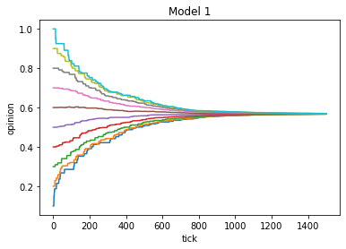
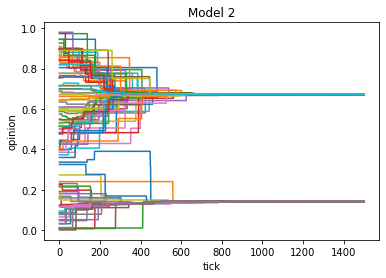
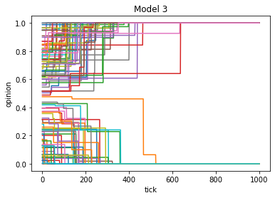

Lösungen
Contents
Lösungen¶
import random
from matplotlib import pyplot as plt
import math
import numpy as np
def get_opinion_weights_1(focal_agent, population):
"""
Ermittelt die Gewichte der Beeinflussung des fokalen Agenten durch einen anderen Agenten
nach den Regeln von Modell 1.
"""
for agent in population:
# Distanz zwischen Position des fokalen Agenten i und des Agenten j berechnen
distance = abs(agent["position"] - focal_agent["position"])
# Wenn Distanz kleinergleich 1
if distance <= 1:
agent["temporary_opinion_weight"] = 1
# Ansonsten:
else:
agent["temporary_opinion_weight"] = 0
def calculate_opinion_change(focal_agent, population):
"""Berechnet die Meinungsveränderung des fokalen Agenten i nach der Beeinflussung durch die Population."""
############################################################
# Oberhalb des Bruchstriches
############################################################
# Liste für die gewichteten Meinungsunterschiede, die später aufsummiert werden
sum_of_weighted_opinion_diffs = 0
# Für jede Position in Population
for agent in population:
# Meinungsdifferenz berechnen
opinion_diff = agent["opinion"] - focal_agent["opinion"]
# Meinungsdifferenz mit entsprechendem Gewicht aus Gewichts-Liste gewichten
weighted_opinion_diff = opinion_diff * agent["temporary_opinion_weight"]
# gewichtete Meinungsdifferenz an entsprechende Liste anhängen
sum_of_weighted_opinion_diffs += weighted_opinion_diff
############################################################
# Unterhalb des Bruchstriches
############################################################
# Achtung: Fehler in Formel in Original-Text
# Es muss korrekterweise die Summe der Beträge der Gewichte berechnet werden
# Summierungsvariable für absolute Beträge der Gewichte
sum_of_abs_opinion_weights = 0
# für jedes Gewicht in weights
for agent in population:
# absoluten Betrag des Gewichts ermitteln
abs_opinion_weight = abs(agent["temporary_opinion_weight"])
# auf Summe aufsummieren
sum_of_abs_opinion_weights += abs_opinion_weight
############################################################
# Dividieren / Durchschnitt berechnen
############################################################
# Meinungsveränderung berechnen
opinion_change = sum_of_weighted_opinion_diffs / sum_of_abs_opinion_weights
############################################################
# Meinung beim fokalen Agenten verändern
############################################################
# neue Meinung berechnen aus momentaner Meinung und Meinungsveränderung
new_opinion = focal_agent["opinion"] + opinion_change
# Meinung in zulässigem Bereich halten
if new_opinion < 0:
new_opinion = 0
elif new_opinion > 1:
new_opinion = 1
# Alte Meinung des Agenten durch neue Meinung ersetzen
focal_agent["opinion"] = new_opinion
def run_model(population, ticks, model_type="model1"):
"""Modell mit Beeinflussung durch direkte Nachbarn. Reproduziert Modell 1 in Mäs 2015. """
# für jeden Zeitschritt
for t in range(ticks):
# zufälligen Agenten ziehen
focal_agent = random.choice(population)
# Meinungsgewichte ermitteln und jedem Agenten als Attribut einspeichern
if model_type == "model1":
get_opinion_weights_1(focal_agent, population)
elif model_type == "model2":
get_opinion_weights_2(focal_agent, population)
elif model_type == "model3":
get_opinion_weights_3(focal_agent, population)
else:
raise ValueError ("Der Parameter 'model_type' hat keinen gültigen Input.")
# Meinungsveränderung berechnen
calculate_opinion_change(focal_agent, population)
if model_type == "model4":
calculate_individualism(focal_agent, population)
if focal_agent["opinion"] < 0:
focal_agent["opinion"] = 0
elif focal_agent["opinion"] > 1:
focal_agent["opinion"] = 1
# Für jeden Agenten
for agent in population:
# Aktuelle Meinung archivieren
agent["opinion_history"].append(agent["opinion"])
fig, ax = plt.subplots()
# Output-Daten plotten
for agent in population:
ax.plot(agent["opinion_history"])
ax.set(xlabel="tick", ylabel="opinion", title=model_type)
plt.show()
# Population erstellen
population = []
for i in range(10):
agent = {
"position": i,
"opinion": (i+1)/10,
"temporary_opinion_weight": None,
"opinion_history": [],
}
population.append(agent)
run_model(
population=population,
ticks=1500,
model_type="model1",
)

Aufgabe 2¶
def get_opinion_weights_2(focal_agent, population):
"""Ermittelt die Beeinflussungsgewichte nach den Regeln von Modell 2."""
# für jeden Agenten bzw. jede Position in Population
for agent in population:
# Absoluten Meinungsunterschied (nicht Positionsunterschied wie in Modell 1) berechnen
abs_opinion_diff = abs(agent["opinion"] - focal_agent["opinion"])
# Wenn Meinungsunterschied kleinergleich Grenzwert
if abs_opinion_diff <= 0.2:
# Gewicht von 1 einspeichern
agent["temporary_opinion_weight"] = 1
# Ansonsten:
else:
# Gewicht von 0 einspeichern
agent["temporary_opinion_weight"] = 0
# Population erstellen
population = []
for i in range(100):
agent = {
"position": i,
"opinion": random.random(),
"temporary_opinion_weight": None,
"opinion_history": [],
}
population.append(agent)
run_model(
population=population,
ticks=1500,
model_type="model2",
)

Aufgabe 3¶
def get_opinion_weights_3(focal_agent, population):
"""Ermittelt die Beeinflussungsgewichte nach den Regeln von Modell 3."""
# für jeden Agenten bzw. jede Position in Population
for agent in population:
# absoluten Meinungsunterschied berechnen
abs_opinion_diff = abs(agent["opinion"] - focal_agent["opinion"])
"""Anmerkung zu Gewichten:
Die Gewichte werden nun auf einen kontinuierlichen Bereich zwischen -1 bis 1 skaliert.
Meinungsunterschiede von >0.5 bis 1 führen zu Gewichten von <0 bis -1.
Meinungsunterschiede von 0 bis 0.5 führen zu Gewichten von 1 bis 0,
"""
# Wenn Meinungsunterschied größer Grenzwert
if abs_opinion_diff > 0.5:
# negatives Gewicht einspeichern
agent["temporary_opinion_weight"] = -1 * (2 * abs_opinion_diff - 1)
# ansonsten:
else:
# positives Gewicht einspeichern
agent["temporary_opinion_weight"] = (1 - 2 * abs_opinion_diff)
# Population erstellen
population = []
for i in range(100):
agent = {
"position": i,
"opinion": random.random(),
"temporary_opinion_weight": None,
"opinion_history": [],
}
population.append(agent)
run_model(
population=population,
ticks=1500,
model_type="model3",
)
